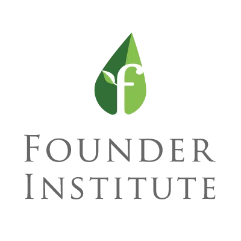
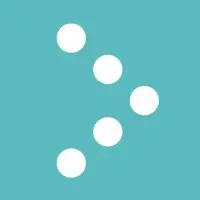
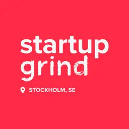

Mentorship Programs
I'm proud to be a mentor at:

Founder Institute
San Francisco / Nordics - Mentoring early-stage founders through the world's largest pre-seed accelerator

Connect Öst Sverige
Supporting entrepreneurs and startups in Eastern Sweden

Startup Grind Nordics
Mentoring founders across the Nordic startup ecosystem
My Approach
Having built Ministry of Programming from the ground up to a Deloitte Top 50 company with 813% growth, and worked as lead developer at three Google/McKinsey Top 50 European startups, I understand what it takes to build and scale successful companies.
My mentorship focuses on practical, hands-on guidance drawn from real startup experience, from technical architecture and product development to fundraising, team building, and navigating the European startup ecosystem. I work with founders who are building bold solutions and aren't afraid to challenge the status quo.
What I Offer
Strategic Guidance
Help founders and leaders navigate critical business decisions, from go-to-market strategy to organizational growth.
Product & Tech
Technical architecture, product development, and engineering team building. Leveraging 15+ years of hands-on software development experience.
Fundraising Support
Guide early-stage founders through the fundraising process, pitch development, and investor relations.
Network Access
Connect mentees with relevant investors, advisors, and partners across the Nordics and Western Balkans.
Recognition
2 x Financial Times FT1000: Europe's Fastest-Growing Companies
My company - Ministry of Programming was featured in the prestigious FT1000 list twice - in 2020 and 2024. This recognition highlights our exceptional growth and impact in the European tech ecosystem, ranking among the continent's fastest-growing companies.
Focus Areas
Interested in Mentorship/Advisory?
I'm always excited to meet ambitious founders and help them on their journey. If you're working on something interesting and think I could help, let's connect.
Get in Touch